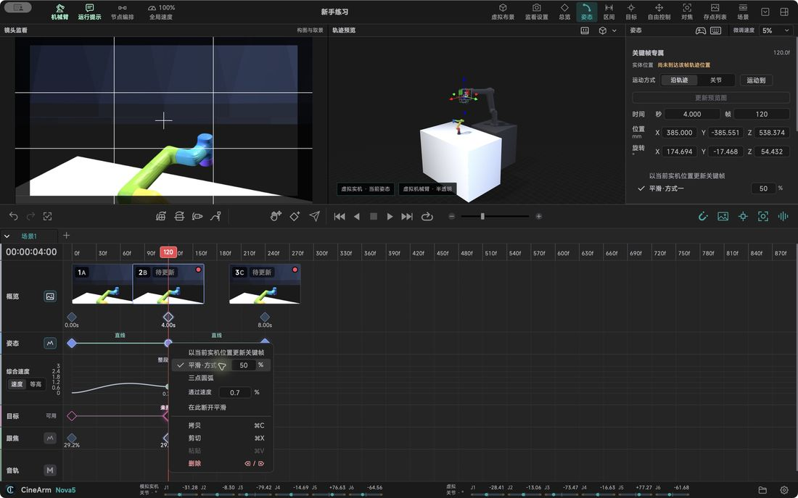

Features in detail / Paths: five ways to get from one shot to the next
Paths: five ways to get from one shot to the next
Sweep past, pass through, or orbit a point — five shapes cover it.
Sweep the cornersContinuous moves without stopping at every position.
Thread several pointsOne flowing line that links multiple positions.
Three-point arcGive a start, a via point and an end, and get a stable arc.
Orbit a subjectDraw the arc around what you are shooting and keep aiming at it.
Hand-shaped curveWhen the arc has to be specific, shape the route yourself.
Always reversibleAny advanced path returns to a plain one in one action.
Let it finish computing before you run it; a saved edit is not a safe run.

Describes CineArm v0.1.46.